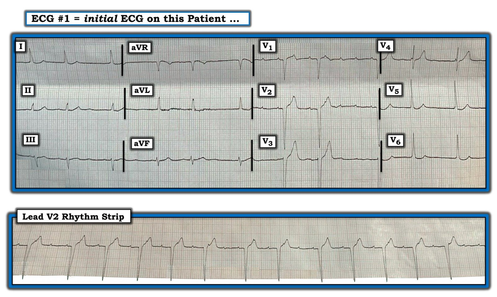
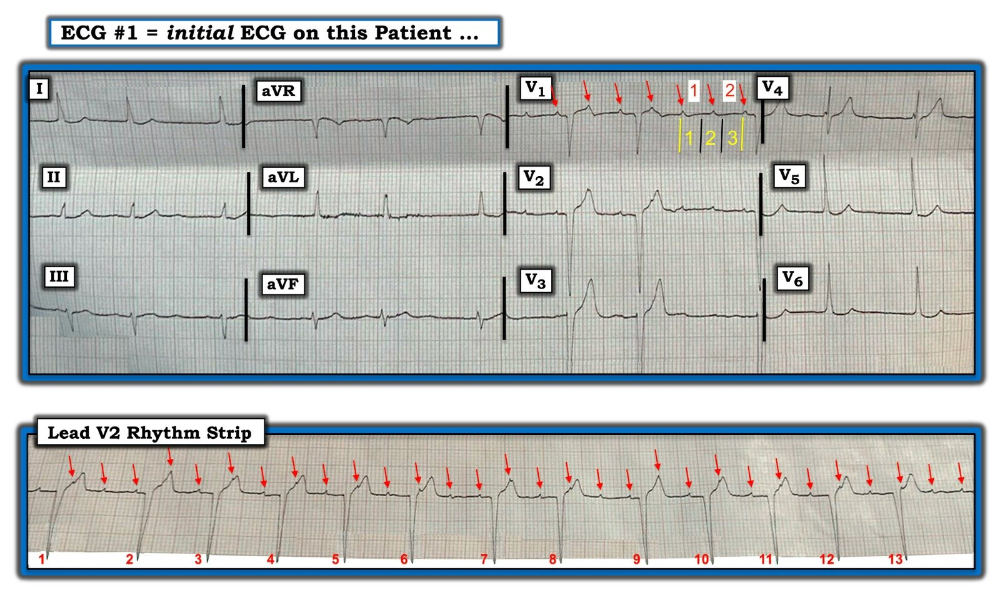
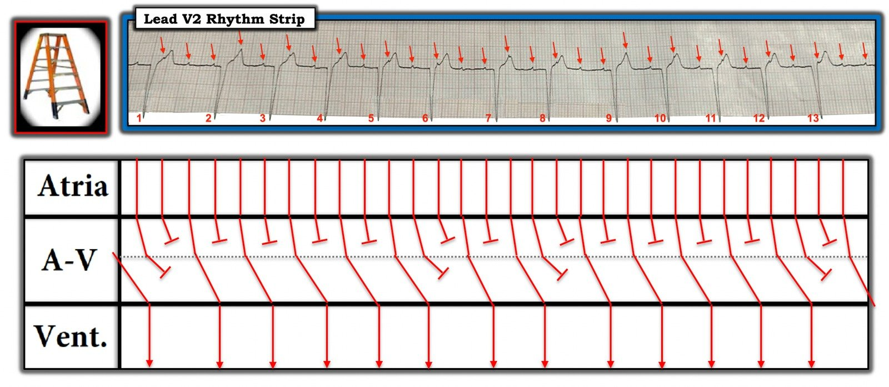
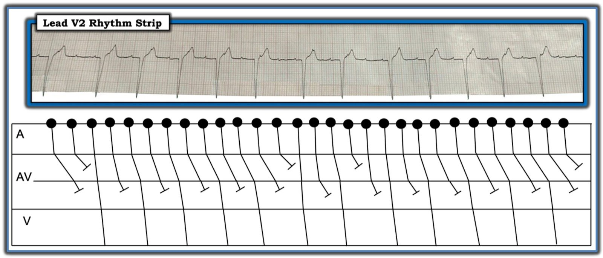

24/11/2020 — Một cú ngã và một nhịp cần nhận ra
Bản dịch tiếng Việt của bài "A Fall and a Rhythm to Recognize" – Dr. Smith’s ECG Blog. Giữ nguyên toàn bộ 6 hình ảnh của bản gốc.
===================================
BÌNH LUẬN CỦA TÔI, bởi KEN GRAUER, MD (24/11/2020):
===================================
Điện tâm đồ 12 chuyển đạo và dải nhịp chuyển đạo dài kèm theo trong Hình 1 — được ghi ở một người đàn ông lớn tuổi bị một cú ngã nhẹ, không có chấn thương nghiêm trọng. Bệnh nhân không có triệu chứng tim mạch — và điện tâm đồ này được ghi như một phần của việc “đánh giá toàn diện”. Bệnh nhân đang dùng Digoxin dài hạn — nhưng ngoài điều này, không có thêm thông tin nào về ca bệnh.
- LƯU Ý: Dù cả bản ghi 12 chuyển đạo lẫn dải nhịp chuyển đạo dài đều bị chụp nghiêng (hơi biến dạng) — chất lượng các bản ghi này vẫn đủ để diễn giải — và — có những bài học quan trọng cần rút ra từ ca này!
CÂU HỎI:
- Nhịp là GÌ trong Hình 1?
- Từ góc độ lâm sàng — nhịp này cho bạn biết ĐIỀU GÌ cho đến khi bạn chứng minh được điều ngược lại?


Hình 1: Điện tâm đồ 12 chuyển đạo và dải nhịp chuyển đạo dài kèm theo của một người đàn ông lớn tuổi bị ngã — nhưng không có triệu chứng vào thời điểm ghi các bản ghi này (Xem bài).
SUY NGHĨ CỦA TÔI về Hình 1: Nhịp này phức tạp — và tôi sẽ bàn về nó từng bước một dưới đây. Điều có thể nói ngay khi nhìn qua — là nhịp này là nhịp trên thất (tức là QRS hẹp ở mọi chuyển đạo) — và — nhịp không đều, và không quá nhanh.
- Xem phần còn lại của điện tâm đồ 12 chuyển đạo — trục nằm ngang (khoảng 0 độ) — có thể có LVH (sóng S sâu ~19-20 mm ở V2 và sóng S bị cắt cụt sau 15 mm ở chuyển đạo V3). Sóng T ở các chuyển đạo V2 đến V4 nhọn — dù cảm nhận của tôi là với sóng S sâu ở các chuyển đạo trước và một bệnh nhân lớn tuổi không triệu chứng — điều này có thể phản ánh “tăng gánh” thất trái (đôi khi biểu hiện bằng ST-T nhọn ở các chuyển đạo trước khi có LVH). ST-T ở các chuyển đạo khác không “bình thường” (tức là ST-T hơi “lõm” ở các chuyển đạo I, V5,V6 — và đoạn ST dẹt ở một số chuyển đạo chi) — nhưng cảm nhận của tôi là nhiều khả năng không có thay đổi ST-T cấp ở bệnh nhân lớn tuổi này, người không hề đau ngực.
- Thành phần thú vị trong Hình 1 là nhịp, thấy rõ nhất trên dải nhịp chuyển đạo dài …
CÂU HỎI:
- BẠN có thấy bằng chứng của hoạt động nhĩ trong Hình 1 không?
- GỢI Ý: VÌ SAO tôi phải với lấy compa đo để trả lời câu hỏi này?
TRẢ LỜI: Nói chung — chuyển đạo TỐT NHẤT để tìm hoạt động nhĩ là chuyển đạo II. Chúng ta định nghĩa nhịp xoang bằng sự hiện diện của sóng P dương ở chuyển đạo II và được dẫn truyền. Dù vậy — điều quan trọng cần nhớ là chuyển đạo tốt thứ 2 để thấy hoạt động nhĩ là chuyển đạo V1.
- Tôi không thấy sóng P ở chuyển đạo II của bản ghi 12 chuyển đạo trong Hình 1. Tôi cũng không thấy sóng P ở 9 chuyển đạo khác. Nhưng chắc chắn chúng ta có thấy bằng chứng của hoạt động nhĩ đều ở chuyển đạo V1 (các mũi tên ĐỎ trong Hình 2).
- Compa đo cho phép chúng ta chứng minh ngay rằng nhiều sóng lệch biên độ nhỏ ở chuyển đạo V1 thực sự là sóng P— bởi vì: i) Compa đo cho thấy các sóng lệch này đều hoàn toàn; và, ii) Chúng ta thấy các sóng lệch đều có thời điểm tương tự ở chuyển đạo V2 trên bản ghi 12 chuyển đạo.
- Lưu ý rằng các sóng lệch nhĩ đều được thấy suốt dải nhịp V2 chuyển đạo dài (các mũi tên ĐỎ trong Hình 2). Một số sóng lệch kín đáo hơn các sóng khác (đôi khi bị ẩn một phần trong các phần khác nhau của sóng T) — nhưng dùng compa đo cho phép chúng ta “dò bước” các sóng P đều suốt toàn bộ dải nhịp chuyển đạo dài!
- Để đánh giá thêm nhịp này — điều quan trọng là xác định tần số nhĩ. Như tôi đã minh họa trong nhiều bài trước trên Dr. Smith’s ECG Blog — việc này dễ làm bằng phương pháp Cách-Một-Nhát (Xem Bình luận của tôi ở cuối trang của bài ngày 15 tháng Tư năm 2020). Các đường dọc màu VÀNG ở chuyển đạo V1 của Hình 2 cho thấy điểm bắt đầu và điểm kết thúc của khoảng đo thời gian cần để ghi 2 sóng P. Cần hơn một chút 3 ô lớn (các số màu VÀNG) để ghi 2 sóng P (các số màu ĐỎ) trong Hình 2. Do đó — MỘT NỬA tần số nhĩ chậm hơn một chút so với 300/3 = khoảng 95/phút. Điều này có nghĩa là tần số nhĩ ~95 X 2 = khoảng 190/phút.
- ĐIỂM THEN CHỐT (PEARL) #1: Tần số nhĩ đều ~190/phút là quá nhanh để là nhịp nhanh xoang. Chẩn đoán phân biệt là giữa AFlutter (cuồng nhĩ) với ATach (nhịp nhanh nhĩ — Atrial Tachycardia). Đường nền đẳng điện giữa các sóng P (thay vì hình “răng cưa”) cùng với tần số nhĩ thấp hơn hẳn 300/phút kết hợp lại ủng hộ mạnh ATach là rối loạn nhịp nhĩ nền.


Hình 2: Tôi đã đánh dấu các sóng P trên điện tâm đồ #1 (các mũi tên ĐỎ). Tôi cũng minh họa phương pháp Cách-Một-Nhát để xác định tần số nhĩ (Xem bài).
CÂU HỎI:
- VÌ SAO nhịp trên dải nhịp chuyển đạo dài trong Hình 2 lại không đều?
- GỢI Ý: Nhịp này có QUY LUẬT nào không? (tức là Có yếu tố nào lặp lại không?).
TRẢ LỜI: Như tôi đã nói ngay từ đầu — nhịp này phức tạp. Tuy vậy — có thể nêu ra một số điểm về những gì chúng ta thấy trên dải nhịp V2 chuyển đạo dài:
- Có gợi ý của nhịp theo nhóm (group beating). Ý tôi là có những yếu tố của nhịp này lặp lại. Ví dụ — 3 “khoảng ngưng” ngắn mà chúng ta thấy (tức là giữa nhát #1-2; giữa #6-7; và giữa #8-9) đều có thời gian xấp xỉ bằng nhau — và khoảng PR của sóng P xuất hiện trước phức bộ QRS thứ 1 ở cuối mỗi khoảng ngưng đều bằng nhau (tức là các khoảng PR trước nhát #2, 7 và 9 là như nhau!).
- Hầu như tất cả các khoảng R-R khác trên dải nhịp chuyển đạo dài này có thời gian rất giống nhau (nếu không nói là bằng nhau)!
- Các khoảng PR đứng trước nhát #3, 4, 5; 8; 10, 11, 12 trông đều như nhau.
- Khoảng PR đứng trước nhát #6 — bằng khoảng PR đứng trước nhát #13 (dù 2 khoảng PR này dài hơn một chút so với các khoảng PR đứng trước nhát #3,4,5,8,10,11,12).
- KẾT LUẬN: Các gạch đầu dòng trên chỉ ra quá nhiều dấu hiệu để có thể là do ngẫu nhiên. Vì vậy, những mối liên hệ nhất quán này, vốn rất khó là do ngẫu nhiên, cho chúng ta biết — chắc chắn phải có một kiểu dẫn truyền nào đó đang diễn ra trên dải nhịp chuyển đạo dài không đều này.
ĐIỂM THEN CHỐT (PEARL) #2: Đôi khi rất hữu ích khi “lùi lại” một chút khỏi bản ghi — để có cái nhìn tổng thể về quy luật của một nhịp phức tạp. Hãy TỰ CHỨNG MINH điều này. Hãy quay LẠI Hình 1 chưa đánh dấu của tôi— và nhìn lại dải nhịp chuyển đạo dài. Biết rằng có một chút biến dạng do ảnh bị chụp nghiêng — Chẳng phải giờ đây dễ hơn để nhận ra các mối liên hệ mà tôi đã nêu bật trong các gạch đầu dòng ở phần trước sao?
- Quen với việc nhận ra nhịp theo nhóm và các quy luật khác của những nhát lặp lại — mang lại một manh mối ban đầu vô giá, có thể cho bạn biết trong vòng vài giây rằng có một kiểu dẫn truyền nào đó.
ĐIỂM THEN CHỐT (PEARL) #3: Rất thường gặp dẫn truyền Wenckebach đi kèm cả AFlutter lẫn ATach. Trong ca hôm nay — chính sự kết hợp của nhịp theo nhóm + nhiều khoảng PR và R-R bằng nhau đã gợi ý mạnh cho tôi rằng có dẫn truyền Wenckebach, trong ca này là ra khỏi nút AV.
- Một điểm “cần nhớ” quan trọng từ ca hôm nay — là ngay cả khi chưa tìm ra cơ chế cụ thể của kiểu dẫn truyền đó — chúng ta vẫn nên nghi ngờ mạnh rằng nhịp này là ATach kèm blốc AV (trong ca này với một kiểu dẫn truyền Wenckebach nào đó ra khỏi nút AV).
ĐIỂM THEN CHỐT (PEARL) #4: Ngay từ đầu ca hôm nay, chúng ta đã được cho biết người đàn ông lớn tuổi này dùng Digoxin dài hạn.
- Sự kết hợp của nhịp nhanh nhĩ kèm blốc Wenckebach ở bệnh nhân đang dùng Digoxin phải gợi ý mạnh ngộ độc Digoxin cho đến khi bạn chứng minh được điều ngược lại!
Đôi lời về Digoxin:
Digoxin hiện không còn được dùng phổ biến như trước đây. Trong những năm tôi được đào tạo và những năm đầu hành nghề — dường như phần lớn bệnh nhân suy tim và/hoặc rung nhĩ đều dùng thuốc này. Nay không còn như vậy. Dù vậy — một số chỉ định chọn lọc của Digoxin vẫn còn — và các bác sĩ cấp cứu vẫn sẽ gặp một số bệnh nhân đang dùng thuốc này. Điều này thực sự quan trọng — vì ngộ độc Digoxin có thể làm bệnh nhân dễ mắc bất kỳ rối loạn nhịp nào trong số nhiều rối loạn nhịp có khả năng đe dọa tính mạng.
- Luôn hỏi bệnh nhân trước mặt bạn đang dùng những thuốc gì. Điều này đặc biệt quan trọng nếu Digoxin nằm trong số các thuốc bệnh nhân đang dùng — vì Digoxin có “cửa sổ điều trị” hẹp giữa tác dụng có lợi và tác dụng độc. Và, nếu bệnh nhân đang dùng Digoxin — hãy nhớ hỏi xem họ có bỏ liều nào không — hoặc ngược lại, có thể họ đã uống thêm vài “liều phụ” “thuốc tim” vì thấy trong người không được khỏe. Đôi khi bạn sẽ ngạc nhiên với những câu trả lời nhận được.
- Với những ai trong chúng ta được đào tạo từ những năm trước — Digoxin đã dạy nhiều người trong chúng ta nhiều về rối loạn nhịp tim hơn bất kỳ yếu tố nào khác. Đó là vì dư Digoxin có thể gây ra hầu như bất kỳ rối loạn nhịp nào (trừ AFib nhanh). Một số nhịp gợi ý đặc biệt ngộ độc Digoxin = PVC thường xuyên và/hoặc đa dạng (multiform); VT; ATach (nhịp nhanh nhĩ) kèm blốc; nhịp bộ nối gia tốc; các nhịp có blốc Wenckebach; AFib rất chậm. Các rối loạn nhịp khác có thể gặp gồm nhịp chậm rõ rệt, khoảng PR kéo dài, và đôi khi blốc AV hoàn toàn.
- Nhiều khoảng nồng độ Digoxin đáy trong huyết thanh khác nhau đã được nêu là “nằm trong ngưỡng điều trị”. Những năm trước, khoảng này là ~0,8 đến 2,0 ng/ml — nhưng hiện nay các khoảng thấp hơn (tức là giữ nồng độ đáy ≤1,2 ng/ml — nếu không muốn nói là dưới 0,8 ng/ml) được khuyến cáo phổ biến hơn. Điểm MẤU CHỐT: Có một “vùng chồng lấn” rộng giữa nồng độ Digoxin huyết thanh nằm trong “ngưỡng điều trị” — và nồng độ Digoxin huyết thanh có thể khởi phát các rối loạn nhịp nghiêm trọng do ngộ độc Digoxin. Bệnh nhân bệnh cấp tính, đặc biệt là những người suy giảm chức năng thận và/hoặc rối loạn điện giải huyết thanh (K+ hoặc Mg++ huyết thanh thấp) — đặc biệt dễ xuất hiện rối loạn nhịp do ngộ độc Digoxin dù nồng độ Digoxin huyết thanh vẫn nằm trong ngưỡng điều trị.
LƯU Ý: Tất cả những điều trên đều liên quan đến ca hôm nay. Rất tiếc, chúng tôi không có thông tin theo dõi về bệnh nhân này — nhưng vì bệnh nhân hôm nay dùng Digoxin dài hạn và biểu hiện ATach + blốc Wenckebach — chúng ta cần nghi ngờ mạnh ngộ độc Digoxin cho đến khi chứng minh được điều ngược lại (ngay cả khi nồng độ Digoxin huyết thanh nằm trong ngưỡng “điều trị”).
- T.B. (P.S.): Người ta đã bàn nhiều về việc tìm “tác dụng của Digoxin” (Dig effect) trên điện tâm đồ. Y văn mô tả đoạn ST “lõm” kèm khoảng QT tương đối ngắn là đáp ứng ST-T với nồng độ thuốc này cao trong huyết thanh. Hình ảnh này có được thấy ở ST-T của các chuyển đạo V5 và V6 trên điện tâm đồ #1 — nhưng không thấy ở các chuyển đạo khác trên bản ghi này.
- Đã làm giảng viên toàn thời gian suốt 30 năm tại một trung tâm chăm sóc ban đầu ngoại trú, nơi chúng tôi phối hợp chặt chẽ với các đồng nghiệp dược lý — tôi có kinh nghiệm phong phú trong việc đọc rất nhiều điện tâm đồ của những bệnh nhân có nồng độ Digoxin huyết thanh được theo dõi cẩn thận theo thời gian. Việc đó đã dạy tôi những điều sau: i) Bệnh nhân dùng Digoxin dài hạn có thể biểu hiện ST “lõm” ở ít nhất vài chuyển đạo (như thấy ở các chuyển đạo V5 và V6 của điện tâm đồ #1) — nhưng không phải mọi bệnh nhân dùng Digoxin đều có những thay đổi ST-T như vậy; và, ii) Bất kể y văn nói gì — không có tương quan đáng tin cậy giữa mức độ cao của nồng độ Digoxin huyết thanh và sự có mặt hay vắng mặt của “tác dụng của Digoxin” trên điện tâm đồ. Bệnh nhân vẫn có thể bị ngộ độc Digoxin dù ST-T bình thường.
THÊM VỀ Nhịp:
Như tôi đã nêu ngay từ đầu — cơ chế của nhịp trên dải nhịp chuyển đạo dài là phức tạp.
- Nhận ra nhịp nhanh nhĩ kèm nhịp theo nhóm cùng các mối liên hệ tương tự của khoảng R-R và PR mà tôi đã trình bày chi tiết ở trên là đủ để gợi ý mạnh rằng có dẫn truyền Wenckebach (và blốc Wenckebach) ra khỏi một hoặc nhiều tầng trong nút AV.
- Tôi đề xuất giản đồ bậc thang (laddergram) trong Hình 3 là cơ chế hoạt động trong ca này. Giản đồ bậc thang gợi ý có dẫn truyền Wenckebach hai tầng ra khỏi nút AV (dẫn truyền 2:1 và 3:2 ở tầng trên — với các chu kỳ Wenckebach dài hơn ở tầng dưới).
- Rất hoan nghênh các cơ chế khác do bạn đọc đề xuất!


Hình 3: Giản đồ bậc thang tôi đề xuất cho nhịp trong ca hôm nay (Xem bài).
================
- LƯU Ý: Xin chân thành CẢM ƠN Edward Brunacci (Úc) đã chia sẻ các bản ghi và ca bệnh này với chúng ta!
================

PHẦN BỔ SUNG (25/11/2020):
Như tôi đã nói trong các bài trước, khi đề xuất lời giải bằng giản đồ bậc thang — thường có thể có nhiều hơn một cách giải thích duy nhất cho một rối loạn nhịp phức tạp. Vì vậy tôi muốn đăng giản đồ bậc thang thay thế do David Richley đề xuất, khác với giản đồ tôi trình bày ở trên trong Hình 3:
- Dave viết: Tôi đưa ra một giản đồ bậc thang thay thế, đề xuất rằng có các chuỗi Wenckebach dài ở tầng trên của nút AV và blốc 2:1 ở tầng dưới của nút AV (Xem Hình 4).
- Dave nói thêm: Tôi không biết giản đồ bậc thang thay thế mà tôi đề xuất có khả năng đúng hơn hay kém hơn lời giải thích của anh, Ken — và tôi chỉ đưa nó ra như một phương án thay thế để cân nhắc!
- ĐIỀU CỐT LÕI: Tôi cũng không biết giản đồ bậc thang Dave đề xuất có khả năng đúng hơn hay kém hơn của tôi — nhưng dù thế nào — các điểm MẤU CHỐT của ca này không thay đổi = bệnh nhân lớn tuổi đang dùng Digoxin dài hạn này biểu hiện ATach + một dạng blốc Wenckebach nhiều tầng trong nút AV — và vì vậy cần được xem là bị ngộ độc Digoxin cho đến khi chứng minh được điều ngược lại.


Hình 4: Giản đồ bậc thang thay thế do David Richley đề xuất (Xem bài).